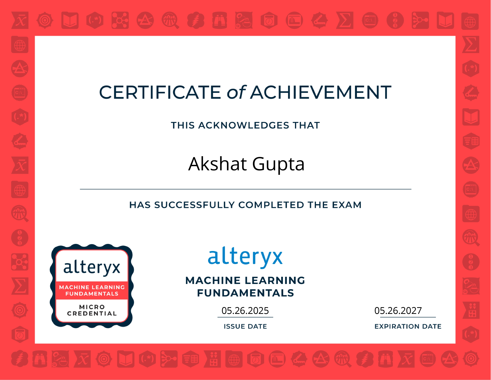
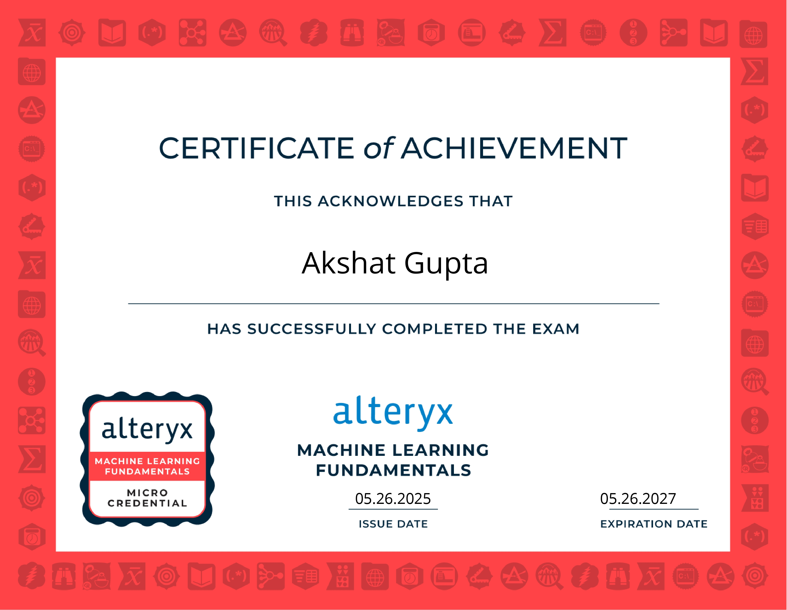

Welcome to my Business Analyst Portfolio!
This is Business Analyst, a professional profile representing the analytical expertise and experience of Akshat Gupta. It showcases a strong background in data analysis, business process optimization, and strategic decision-making, backed by tools like Excel, Power BI, SQL, and Alteryx. With a proven ability to derive insights from data and support business growth, Akshat brings value across multiple domains and industries.
- ➤ He has leveraged the Bloomberg Terminal to deliver real-time financial insights and publish data-driven equity research reports.
- ➤ Collaborated with cross-functional teams to translate complex market data into strategic recommendations for clients.
- ➤ Hands-on experience with Bloomberg tools demonstrates a high level of financial acumen and analytical precision in business reporting.
Resume showcases
Meet the Analyst

Akshat Gupta
Financial Business Analyst with 3+ years of experience turning data into strategy. Proficient in Power BI, Alteryx, SQL, and Snowflake. Skilled at building dashboards, optimizing ETL pipelines, and presenting financial insights with clarity.
Business Analyst
Certification
Projects
"Led a data-driven business analysis project aimed at optimizing operational efficiency and increasing revenue. Collaborated cross-functionally to gather requirements, define KPIs, and build actionable dashboards."
-
Advanced_Date_and_Time_Functions
Integration of Snowflake and Pandas for data retrieval, advanced manipulation, and EDA with date/time focus.
-

Banking Analytics Project
Created a dataset with 1M records over 8 tables; focused on end-to-end data pipeline and insights.
-

Vrinda-Store-Data-Analysis
65% of customers are women; top sales from age 30–49 in Maharashtra, Karnataka, and Uttar Pradesh.
Certifications & Accreditations
 

Important Notes
- Machine Learning Fundamentals certification demonstrates foundational ML understanding in Alteryx.
- Foundation Micro-Credential validates data prep and blending using Alteryx Designer.
- Designer Core Certification confirms skills in workflow building and transformation.
- Auto Insights badge shows ability to automate insights and storytelling.
- Collectively, these highlight a solid analytical and tool-based business analysis skillset.
Skills
Python
SQL

Advanced Excel

Power BI

Alteryx
Snowflake

Power Automate
PySpark
Hobbies
- 📊 Data Storytelling – Exploring data visualizations and dashboards to tell impactful stories.
- 📚 Reading Business & Tech Blogs – Staying updated on industry trends, case studies, and innovations.
- 💡 Problem Solving Puzzles – Solving logic puzzles like Sudoku to enhance analytical thinking.
- 🎯 Process Optimization Projects – Using tools or workflows to improve everyday processes.